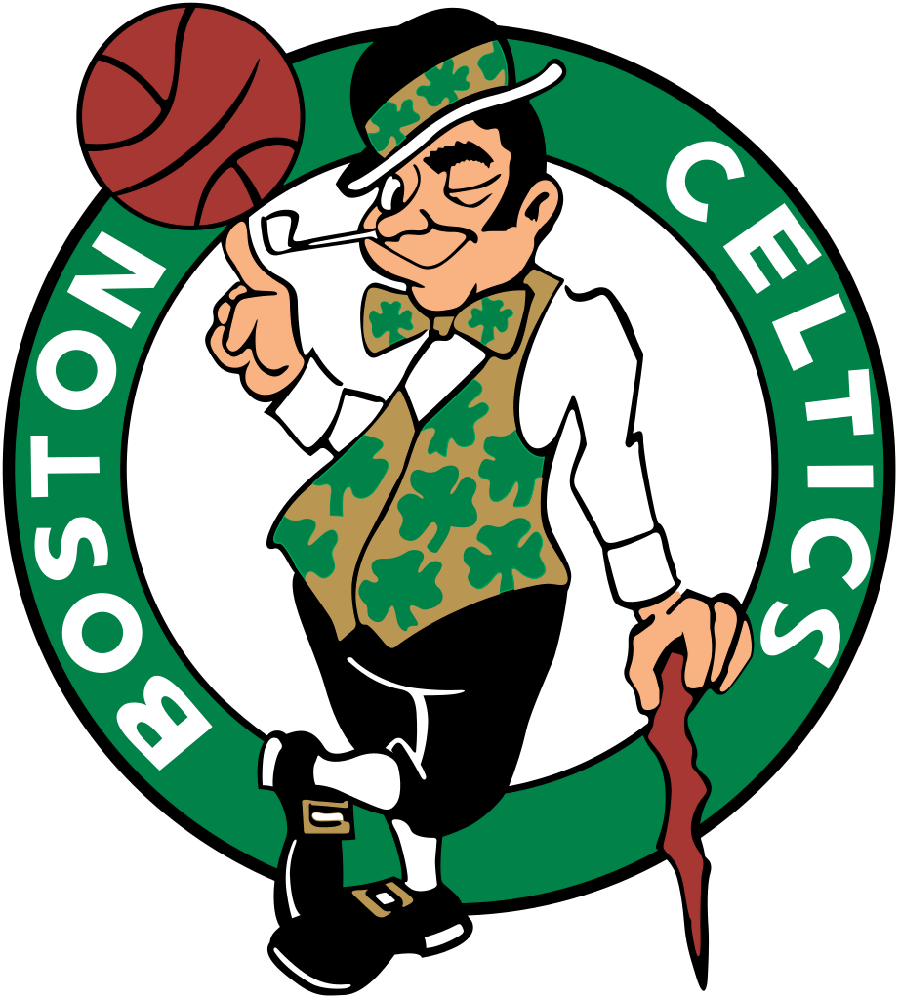
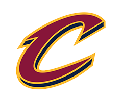

What are Power Rankings?
There are 30 teams in the NBA. 15 in the Western Conference and 15 in the Easter Conference. Each week the 30 teams are ranked based on their weekly record and how they've played. These power rankings are a good indication of what teams are on top of the NBA. Additionally, these rankings change weekly as certain teams improve or drop. Check back here weekly in order to get an idea of what team is controlling the league.

1) Houston Rockets
Lately, the Rockets seem unstoppable. The Rockets are being led by their strong backcourt of James Harden and Chris Paul. NBA lovers can finally see the full extent of the Rockets' dominance since Chris Paul is finally able to play after sufferin an injury earlier this season. Since his return the Rockets truly look like they can challenge the Warriors. For more information, click on the Rockets' logo.

2) Golden State Warriors
The Warriors have gotten their MVP back. After returning from injury Stephen Curry truly looks unstoppable. Breaking ankles and shooting game winners left and right. After defeating the league's top teams including the Clevelamnd Cavaliers and the Houston Rockets, the Warriors look like they are a lock for the NBA FInals. For more information, click on the Warrior's logo.
3) Boston Celtics
The Celtics are on a roll and it helps that their next couple of games are
all against teams with records below .500. Kyrie Riving is mesmerizing as always,
but what's keeping this team on top of the pack is their defensive capabilities
behind players like Jaylen Brown and Marcus Smart. For more information, click
on the Celtic's logo.

4) Cleveland Cavaliers
The Cav's win streak has come to an end over the weekend, but that does not mean they're dropping to the bottom of the rankings. In fact, LeBron James has never looked better and that is a scary sight for the rest of the league. The King is coming for his trophy. For more information, click on the Cavaliers' logo.

5) Toronto Raptors
Don't look now but the Toronto Raptors are second in the Eastern Conference. Yes, even above the 2016-2017 Eastern Conference Champions Cleveland Cavaliers. The Raptors are led by Demar DeRozan and Kyle Lowry who can play on both sides of the ball. For more information, click on the Raptors' logo.